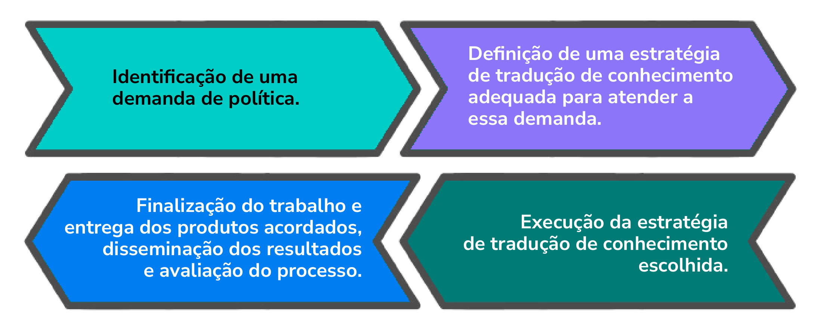

Módulo 1 | Aula 3
Núcleos de Evidências e Redes de Pesquisa em PIE
Como Estruturar um Núcleo de Evidências
A implementação de núcleos de evidências em saúde exige planejamento sistemático e atenção a desafios operacionais recorrentes. Esta seção apresenta orientações práticas para estruturação de NEvs, baseadas no Guia para Implementar um NEv e em experiências documentadas no Brasil e internacionalmente.
Passos para Estruturação de um Núcleo de Evidências
Bases do Núcleo de Evidências
A estruturação de um NEv inicia-se com a definição de seus fundamentos institucionais. O núcleo pode ser compreendido como um "intermediário de evidências", uma unidade que facilita o acesso das pessoas envolvidas na formulação e implementação de políticas públicas às evidências necessárias. Ele pode fazer parte de diferentes tipos de organizações:
- Governos.
- Universidades
- Terceiro Setor ou setor privado.
A definição clara dos objetivos do NEv constitui o primeiro passo essencial e a formalização institucional garante legitimidade e sustentabilidade. O NEv de Piripiri estabeleceu como objetivo promover o uso local de conhecimento científico na formulação e implementação de políticas de saúde e foi formalizado pela Portaria 032/2010 da Secretaria Municipal de Saúde. A EVIPNet Brasil foi instituída por meio da Portaria nº 2.636/GM/MS de 7 de outubro de 2009, que criou o Conselho Consultivo e a Secretaria Executiva da rede.
Estrutura do Núcleo de Evidências
A estrutura operacional do núcleo requer elementos constitutivos mínimos. É desejável que o NEv conte com, no mínimo, uma equipe de duas ou três pessoas com qualificação adequada para os serviços que serão ofertados. O NEv de Piripiri iniciou com cinco profissionais de saúde de nível superior, expandindo para dez profissionais capacitados no início de 2011, com um coordenador designado com dedicação exclusiva. As equipes dos núcleos brasileiros incluem:
- Profissionais de saúde.
- Estudantes de graduação e pós-graduação.
- Professores universitários.
- Servidores públicos de secretarias de saúde.
A infraestrutura física e tecnológica também é fundamental. O núcleo necessita de:
- Espaço físico e/ou recursos para trabalho remoto.
- Recursos de informática (computadores, acesso à internet, armazenamento e segurança da informação).
- Acesso a recursos para busca de evidências (bancos de dados, repositórios de publicações).
O NEv de Piripiri foi implementado juntamente com uma Estação da Biblioteca Virtual em Saúde (BVS), com três estações de trabalho informatizadas doadas pelo Ministério da Saúde e quatro adquiridas pela Secretaria Municipal de Saúde, além de acesso à internet banda larga.
Gestão do Núcleo de Evidências
A dinâmica de trabalho do NEv envolve etapas sequenciais e interconectadas. Conheça o processo:

A governança desse processo pode ser estabelecida por acordos entre a equipe técnica do NEv e a entidade demandante, ou por decisão do coordenador baseada na demanda.
A capacitação da equipe constitui pré-requisito essencial. Os profissionais do NEv de Piripiri foram treinados no uso das Ferramentas SUPPORT. Entre janeiro de 2013 e março de 2016, a EVIPNet Brasil capacitou 532 pessoas nos métodos das Ferramentas SUPPORT a partir de 26 oficinas.
Produtos e Serviços do Núcleo de Evidências
Os NEvs desenvolvem portfólio diversificado de produtos de tradução do conhecimento. Veja:
- As sínteses de evidências para políticas de saúde (policy briefs) constituem o produto mais elaborado, apresentando o problema, as opções para enfrentá-lo com suas consequências e custos, e as considerações-chave de implementação.
- As respostas rápidas atendem necessidades urgentes das partes interessadas, mobilizando evidências de forma acelerada.
- As revisões sistemáticas sintetizam evidências sobre questões específicas com rigor metodológico.
- Os diálogos deliberativos representam o produto interativo, reunindo formuladores de políticas, pesquisadores e representantes da sociedade civil para deliberar sobre questões prioritárias informados por sínteses de evidências previamente circuladas.
Você saberá mais sobre esses produtos ao longo deste curso.
Projeção do Trabalho do Núcleo de Evidências
A comunicação e o networking fortalecem a imagem e o reconhecimento do núcleo. A EVIPNet Brasil desenvolveu portal na internet, atuou nas redes sociais virtuais e participou em eventos científicos e de gestão. A participação do NEv em redes de PIE gera oportunidades de troca e trabalho em parceria, sendo a EVIPNet uma das principais referências.
A construção de parcerias estratégicas, com estabelecimento de vínculos formais e informais com pesquisadores e intermediários de conhecimento fora da organização, amplia a capacidade operacional.